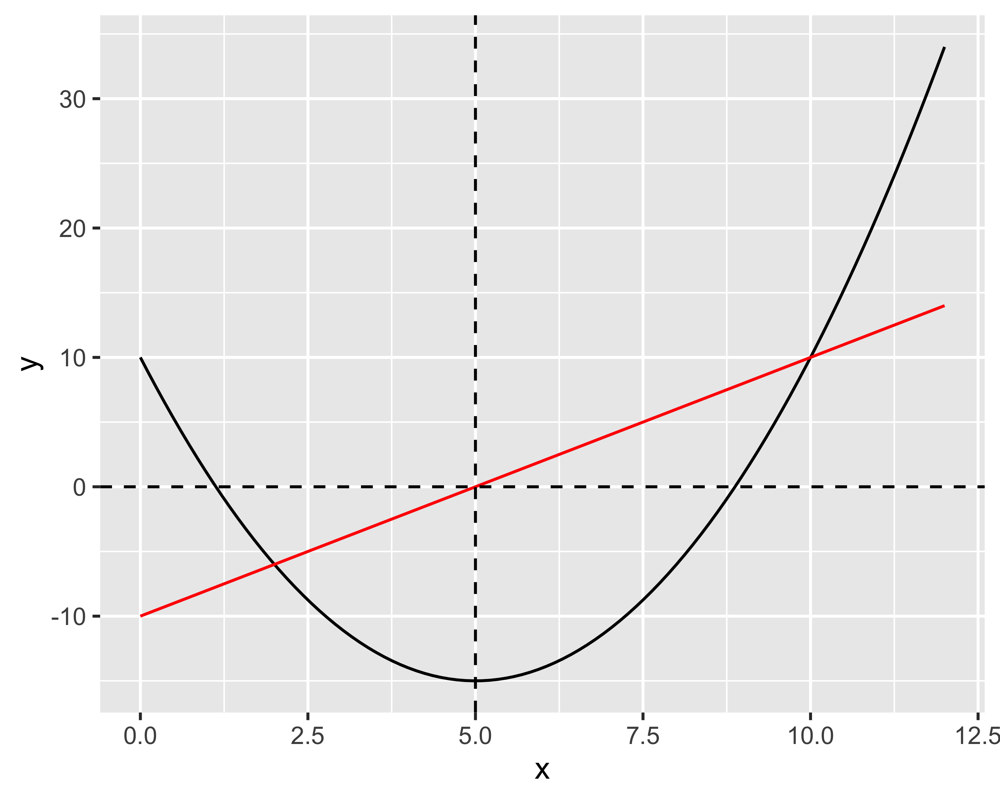
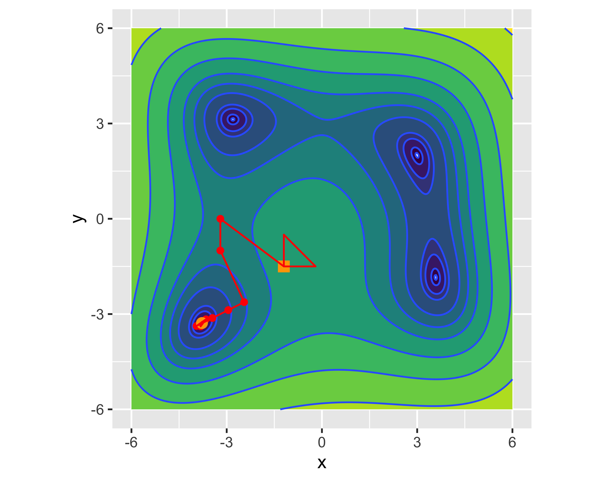

Ottimizzazione dei parametri di un processo manifatturiero
Metodi numerici
03 novembre 2025
Esempi


Nota
- Le sole simulazioni richiedono tempi di calcolo di decine di ore
- Ogni modello simulativo deve essere verificato per convergenza (dimensione mesh) e validato
Cosa significa
Se la funzione/campo da ottimizzare è analitica, è possibile usare:
- metodi analitici, quando è possibile calcolare gli zeri della derivata
- metodi numerici derivativi, altrimenti

E se il campo da ottimizzare non è analitico?
Per quanto visto precedentemente, in casi di applicazione industriale raramente si dispone di un modello analitico, ancor più raramente esso è differenziabile
Servono quindi metodi numerici gradient-less, cioè che non richiedono la conoscenza del gradiente per raggiungere il minimo
Spesso, comunque, il minimo può essere locale e non si ha modo di verificarne l’unicità

Nelder-Mead
- Si definisce un simplesso un iper-poligono con N vertici su una superficie di risposta in uno spazio N-dimensionale
- Il simplesso viene iterativamente trasformato precipitando nel minimo locale


Traiettoria — Minimi locali
Nota
La posizione di partenza del simplesso può determinare il risultato finale, precipitando in minimi differenti


Particle swarm
Se il processo/fenomeno può mostrare molti minimi locali esistono metodi globali (più costosi). Un esempio è lo sciame di particelle
- si inizializza una griglia di particelle in un dominio
- ogni particella ha un vettore velocità inizialmente convergente al centro
- ad ogni passo si valuta la funzione e si corregge la velocità in proporzione alla riduzione della funzione
- si definisce un criterio di convergenza

Nota
Il metodo può essere combinato con altri metodi a ricerca locale (es. Nelder-Mead)